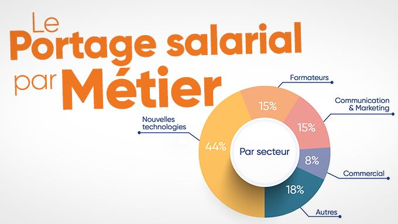

PORTAGE
Le portage salarial est une forme de travail ayant récemment fait son apparition dans le Code du travail. Ce dispositif atypique associe les avantages de l’entrepreneuriat et les atouts du salariat. Le consultant en portage salarial, ou salarié porté, bénéficie ainsi à la fois d’une grande liberté d’organisation, d’une protection sociale complète et d’un accompagnement personnalisé lui permettant de développer son activité professionnelle selon ses aspirations.
Du fait de son caractère nouveau, le portage salarial suscite de nombreuses interrogations parmi les cadres en recherche de liberté et les indépendants qui souhaitent exercer dans le cadre d’une structure sécurisée.
LE PORTAGE SALARIAL, C’EST QUOI ? DÉFINITION SIMPLE
Le portage salarial se présente comme une relation triangulaire entre trois acteurs : le consultant en portage d’un côté, la société de portage salarial de l’autre, et enfin, l’entreprise cliente. Cette relation d’interdépendance permet au consultant, préalablement embauché par la société de portage, de réaliser des missions correspondant à son expertise pour les clients de son choix.
En contrepartie de la réalisation de ses missions, il perçoit un salaire, versé par la société de portage. Cette dernière s’occupe également de la gestion de ses obligations administratives et lui apporte un accompagnement au quotidien pour l’aider à développer son activité.
DÉFINITION DU PORTAGE SALARIAL SELON LE CODE DU TRAVAIL
« Le portage salarial est un ensemble de relations contractuelles organisées entre une entreprise de portage, une personne portée et des entreprises clientes comportant pour la personne portée le régime du salariat et la rémunération de sa prestation chez le client par l’entreprise de portage. »
Article L1251-64 du Code du Travail
Même si le principe du portage salarial et l’apparition des premières sociétés spécialisées dans ce domaine remontent à la fin des années 1980, il a fallu attendre l’ordonnance du 2 avril 2015 pour que cette forme de travail atypique trouve un cadre légal enfin stable.
Cette ordonnance n° 2015-380 explicite, entre autres, les principes fondateurs du portage salarial. On y apprend ainsi que le consultant en portage salarial doit être détenteur d’une expertise, d’une qualification et d’un degré d’autonomie suffisant pour être en capacité de rechercher ses clients et de négocier les modalités de ses interventions. Par voie de conséquence, la société de portage salarial n’est aucunement tenue de lui proposer des missions.
Par ailleurs, les missions acceptées par le salarié porté doivent strictement se limiter aux missions de services, en dehors des activités qui se rapportent aux services à la personne.
De son côté, la société de portage prend en charge l’activité du salarié porté et lui verse une rémunération mensuelle dont le montant minimal doit être égal à 75 % de la valeur mensuelle de la Sécurité sociale, à défaut d’accord de branche étendue.
Une convention collective a été signée en mars 2017 et sera applicable en juillet 2017. Sa mission ? Définir une classification des salariés portés et de nouveaux minimas de rémunération.
PORTAGE SALARIAL : COMMENT ÇA MARCHE ?
Pour pouvoir commencer à travailler en portage salarial, le consultant doit tout d’abord trouver une mission correspondant à sa qualification. Il contacte alors la société de portage salarial pour indiquer son désir de faire héberger son activité.
Dans un premier temps, il signe une convention de portage salarial, à condition toutefois qu’il corresponde bien au profil recherché. Ce document fixe ses modalités d’hébergement et officialise ses engagements vis-à-vis de la société de portage, et réciproquement.
La signature du contrat de travail (ou contrat de portage salarial) intervient dès le moment où le salarié porté accepte une première mission et signe un contrat de prestation avec son client. Elle entraine l’application de droits et d’obligations pour l’employeur comme pour le salarié porté.
Le consultant peut alors réaliser sa prestation selon les modalités négociées préalablement. La mission est facturée par la société de portage salarial qui, après retrait des charges obligatoires et des frais de gestion, reverse une partie des honoraires sous forme de salaire. Le montant du salaire perçu par le consultant représente environ 48 % du montant de ses factures HT.
LES 5 AVANTAGES DU PORTAGE SALARIAL
Moins contraignant et plus motivant que le salariat classique, plus sécurisant et accessible que les autres statuts indépendants ; le portage salarial ne manque pas d’atouts. Voici ses principaux avantages.
➀ La sécurité du statut de salarié
Malgré la flexibilité et l’autonomie dont il jouit au quotidien, le consultant en portage salarial n’est cependant pas un travailleur indépendant au sens strict du terme. Signataire d’un contrat de travail, il bénéficie du statut de salarié. Une particularité qui n’est pas sans intérêt, car, à l’inverse d’un professionnel exerçant à son propre compte, le consultant profite d’un contexte de travail hautement sécurisé.
Comme tout salarié, il bénéficie ainsi du régime général de la Sécurité sociale, d’une prévoyance, de cotisations retraite, de congés payés, d’une assurance chômage, ainsi que d’une mutuelle collective d’entreprise.
➁ Une gestion de clientèle autonome
Les cadres employés par des entreprises classiques éprouvent souvent de vraies difficultés à s’investir dans des projets qui ne leur conviennent pas. En découlent fatalement une augmentation de la frustration et une perte totale de motivation, à plus ou moins long terme.
En portage salarial, la situation est bien différente. Le salarié porté est en effet totalement libre d’accepter uniquement les missions de son choix, qu’il négocie indépendamment de la société de portage salarial. De ce fait, il a la possibilité de se constituer une clientèle dont il est pleinement responsable.
➂ Un emploi du temps flexible
Le principe des horaires de bureau est loin de convenir à tout le monde. De nombreux employés se plaignent en effet de ne pas pouvoir profiter pleinement de leur famille, de ne pas avoir assez de temps à consacrer à leurs loisirs, à cause d’emplois du temps surchargés ou peu adaptés à leur activité.
À l’inverse, le consultant exerçant en portage salarial bénéficie d’une flexibilité bien difficile à obtenir dans d’autres contextes de travail. Ainsi, libre à lui de travailler comme il l’entend afin de s’aménager des plages horaires uniquement dédiées à ses activités secondaires, s’il le souhaite.
➃ Une activité entrepreneuriale maîtrisée
En intégrant une société de portage salarial, le consultant n’est nullement tenu de créer sa propre structure juridique et donc d’en subir les conséquences négatives !
➄ Une gestion administrative sécurisée
Les tâches administratives sont source d’inquiétude et d’agacement pour beaucoup d’entrepreneurs. Face à la somme d’obligations sociales, fiscales et comptables à réaliser régulièrement, certains d’entre eux finissent tout simplement par jeter l’éponge pour se tourner vers le salariat ou vers un statut auto-entrepreneur plus facile à gérer, mais aussi plus limité.
Grâce au portage salarial, il est possible de mener une activité indépendante, expurgée de toute contrainte comptable, fiscale et administrative.
